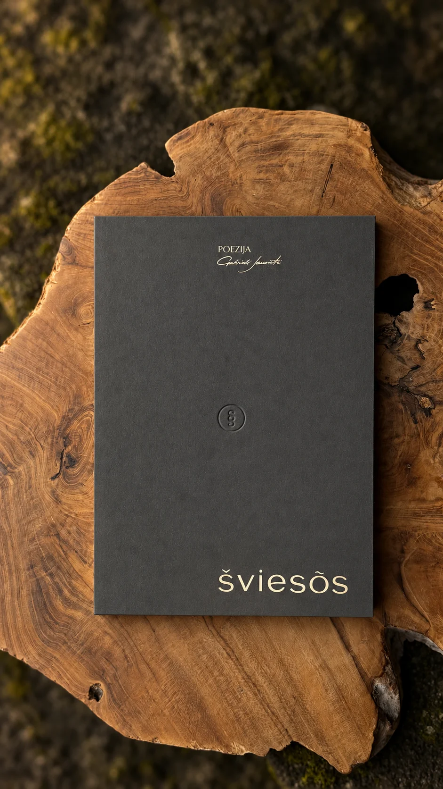

POETRYPOEZIJA
My first poetry book, “šviesos”, is available only in Lithuanian. If you’d like to become a patron and help bring my second poetry book to print in English, please get in touch.
155 puslapiai „šviesos“ pasiruošę tave sutikti, šildyti, atspindėti ir vesti kasdienybėje.
Eilės — priminimai, padedantys įžvelgti ir prisiminti savosios Sielos stiprybę ir šviesą.

You can order a custom poem written just for you or on a subject of your choice for €33. Get in touch to order.
- Vienetinis leidimas
- Limituotas 200 egzempliorių tiražas
- 127 eilėraščiai
- Open spine įrišimas
- Off white tekstūrinis popierius
Kaina: 33 €